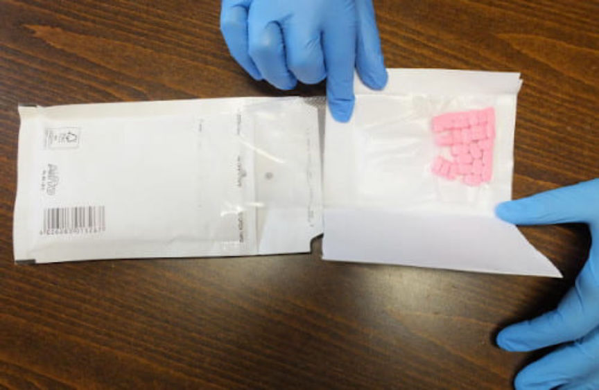
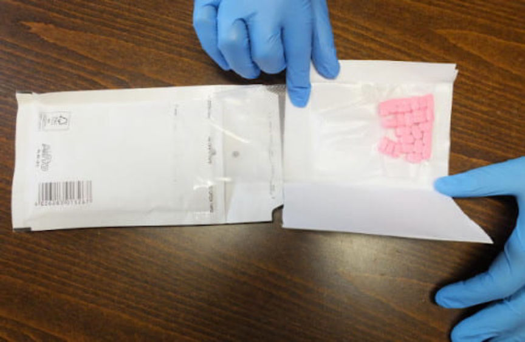

Florida Man Sentenced for Counterfeit Credit Card Sales
~3 min read | Published on 2020-07-03, tagged Counterfeits, Credit-Cards, DarkWeb, Sentenced using 737 words.
United States District Judge James S. Moody, Jr. sentenced a Florida man to 60 months in prison for selling counterfeit credit cards on the darkweb. The defendant also manufactured firearms and attempted to sell them on the darkweb.
Michael Prime, 40, of Tampa Florida, according to an announcement by the US Attorney’s Office for the Middle District of Florida, sold firearms on an undisclosed darkweb marketplace and sold counterfeit credit cards on Dream Market, Alphabay, and Wallstreet Market. Prime pleaded guilty to access device fraud, identity theft, and possession of a firearm as a convicted felon earlier this year.

During a search of Prime’s residence in Tampa, Florida, law enforcement officers discovered stacks of credit cards, a credit card press, and equipment used to place chips in credit cards. Deputies with the Hillsborough County Sheriff’s Office had discovered the cards after responding to a domestic violence call from Prime’s wife. Prime identified himself to the authorities using a stolen identity. After arresting Prime for domestic battery by strangulation, law enforcement learned Prime’s real identity. The fingerprints identified Prime since he had a previous felony conviction for conspiracy to commit wire fraud.
Special Agent Bryan Halliwell with the United States Secret Service, in a criminal complaint (pdf, html), wrote that a search of Prime’s house resulted in the discovery of the evidence listed below.
roughly 1,774 counterfeit credit/debit cards approximately 1,490 blank cards of varying color, some of which contained magnetic stripes and/or credit/debit card chips; approximately 37 counterfeit driver’s licenses and ID’s purportedly issued by the states of Washington, Ohio, Florida, Virginia, and the United Kingdom; counterfeit social security card templates; sheets of holograms used for manufacturing credit/debit card and IDs; counterfeit chips for credit/debit card manufacturing; a Mesa safe; many thumb drives and electronic media storage devices; a box of paper that contains embedded blue and red fibers similar to U.S. currency paper.
During an interview with law enforcement, Prime said he had worked for the Republic of Lampeduza, a site that “facilitated the commission of credit card fraud by hosting, receiving, and selling stolen credit/debit card account information resulting from online breaches.”
Prime stated he was paid approximately $1,000 per month in Bitcoin as compensation for working for the Republic of Lampeduza.
Prime volunteered information about counterfeit credit card sales on darkweb marketplaces as well.
Prime also admitted to selling counterfeit credit cards and counterfeit ids on dark web sites such as Dream Market, Wall Street Market, and Alpha Bay. Prime stated he was paid in Bitcoin for these sales. 16. Prime stated he sold virtual weapons on the virtual reality website Second Life, from which Prime claimed he made approximately $300,000.
He told investigators that he had 3,500 Bitcoin ($24 million at the time) in his possession.
Prime, according to the information contained in his plea agreement, manufactured and advertised firearms on the darkweb. It appears as if he purchased “80%” frames (which are pieces of polymer or aluminum), milled the rails and barrel block, and then added his own slide and LPK. Law enforcement has evidence Prime advertised the constructed “frankenglocks.” Although the Bureau of Alcohol Tobacco and Firearms announcement claimed “Prime sold [untraceable firearms] that he manufactured and advertised for $1,500 on the darkweb,” court documents included no evidence that Prime completed any transactions.
One statement Prime had posted on an undisclosed onion service advertised “unregistered and untraceable guns.” “They are not even ballistically registered,” he wrote, likely referring to the ATF’s National Integrated Ballistic Information Network.
According to a report on RipOffReport, Prime did sell stun guns online in 2014 (which are legal in most parts of the United States). That same report and many others from a similar time frame accuse Prime of committing various forms of fraud on the internet.
He posts himself as a web developer, 3d print operator, consultant of web security, and other miscellaneous services he conjures up to get your attention. He steals software, credit card numbers, and even physical property. He’s an ex-felon. Will forge signatures to obtain money. He created counterfeit money orders. He was investigated by the FBI, CIA, and the US POSTAL SERVICE for his fraudulent activities. Sells cheap stun guns online via PayPal and will sell off your personal information.
On December 12, 2019, Prime pleaded guilty to access device fraud, identity theft, and possession of a firearm as a convicted felon. On June 26, 2020, Judge Moody sentenced Prime to five years and 10 months in federal prison and ordered him to pay a $2,000 fine.
Michael Prime, 40, of Tampa Florida, according to an announcement by the US Attorney’s Office for the Middle District of Florida, sold firearms on an undisclosed darkweb marketplace and sold counterfeit credit cards on Dream Market, Alphabay, and Wallstreet Market. Prime pleaded guilty to access device fraud, identity theft, and possession of a firearm as a convicted felon earlier this year.

Prime in his most recent mugshot
During a search of Prime’s residence in Tampa, Florida, law enforcement officers discovered stacks of credit cards, a credit card press, and equipment used to place chips in credit cards. Deputies with the Hillsborough County Sheriff’s Office had discovered the cards after responding to a domestic violence call from Prime’s wife. Prime identified himself to the authorities using a stolen identity. After arresting Prime for domestic battery by strangulation, law enforcement learned Prime’s real identity. The fingerprints identified Prime since he had a previous felony conviction for conspiracy to commit wire fraud.
Special Agent Bryan Halliwell with the United States Secret Service, in a criminal complaint (pdf, html), wrote that a search of Prime’s house resulted in the discovery of the evidence listed below.
During an interview with law enforcement, Prime said he had worked for the Republic of Lampeduza, a site that “facilitated the commission of credit card fraud by hosting, receiving, and selling stolen credit/debit card account information resulting from online breaches.”
Prime stated he was paid approximately $1,000 per month in Bitcoin as compensation for working for the Republic of Lampeduza.
Prime volunteered information about counterfeit credit card sales on darkweb marketplaces as well.
Prime also admitted to selling counterfeit credit cards and counterfeit ids on dark web sites such as Dream Market, Wall Street Market, and Alpha Bay. Prime stated he was paid in Bitcoin for these sales. 16. Prime stated he sold virtual weapons on the virtual reality website Second Life, from which Prime claimed he made approximately $300,000.
He told investigators that he had 3,500 Bitcoin ($24 million at the time) in his possession.
Prime, according to the information contained in his plea agreement, manufactured and advertised firearms on the darkweb. It appears as if he purchased “80%” frames (which are pieces of polymer or aluminum), milled the rails and barrel block, and then added his own slide and LPK. Law enforcement has evidence Prime advertised the constructed “frankenglocks.” Although the Bureau of Alcohol Tobacco and Firearms announcement claimed “Prime sold [untraceable firearms] that he manufactured and advertised for $1,500 on the darkweb,” court documents included no evidence that Prime completed any transactions.
One statement Prime had posted on an undisclosed onion service advertised “unregistered and untraceable guns.” “They are not even ballistically registered,” he wrote, likely referring to the ATF’s National Integrated Ballistic Information Network.
According to a report on RipOffReport, Prime did sell stun guns online in 2014 (which are legal in most parts of the United States). That same report and many others from a similar time frame accuse Prime of committing various forms of fraud on the internet.
He posts himself as a web developer, 3d print operator, consultant of web security, and other miscellaneous services he conjures up to get your attention. He steals software, credit card numbers, and even physical property. He’s an ex-felon. Will forge signatures to obtain money. He created counterfeit money orders. He was investigated by the FBI, CIA, and the US POSTAL SERVICE for his fraudulent activities. Sells cheap stun guns online via PayPal and will sell off your personal information.
On December 12, 2019, Prime pleaded guilty to access device fraud, identity theft, and possession of a firearm as a convicted felon. On June 26, 2020, Judge Moody sentenced Prime to five years and 10 months in federal prison and ordered him to pay a $2,000 fine.